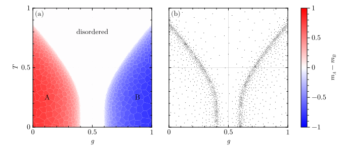

Phase diagram on 4 cluster nodes
This example maps the phase diagram of a model with two ordered phases and one disordered phase, using Learner2D with 128 workers on 4 nodes of a Slurm cluster. It has two versions: with Distributed.jl workers and with MPI ranks. Both also run on a laptop. It builds on Getting started and Parallel execution.

(a) Voronoi cells of 1500 samples, coloured by $m_A - m_B$: red is phase A, blue phase B, white disordered. (b) The samples alone. They gather on the phase boundaries, where an order parameter sets in.
The scripts are in examples/phase_diagram/:
| File | Does |
|---|---|
model.jl | the model: order_parameters(g, T) returns $(m_A, m_B)$ |
run_distributed.jl | runs the learner on Distributed.jl workers and saves phase_diagram.csv |
job_distributed.sh | Slurm job: 4 nodes × 32 tasks, one worker per task |
run_mpi.jl | the same with MPIExecutor |
job_mpi.sh | Slurm job: 4 nodes × 32 MPI ranks |
plot.jl | loads phase_diagram.csv and draws the figure above |
The model
The model is a mean-field transverse-field Ising magnet with two competing orders, small enough to read in a minute. A coupling ratio $g \in [0, 1]$ shifts weight from a coupling $J_A = 1 - g$, which favours order A, to a coupling $J_B = g$, which favours order B. A transverse field $\Gamma = 0.6$ disorders both. Each order parameter solves the mean-field equation
\[m = \frac{J m}{h} \tanh\frac{h}{T}\]
with $h = \sqrt{(J m)^2 + \Gamma^2}$. Order needs $J > \Gamma$ at $T = 0$, so neither order survives for $0.4 < g < 0.6$: there the system stays disordered down to $T = 0$. At $g = 0$ order A sets in below $T_c = \Gamma / \mathrm{artanh}\thinspace\Gamma \approx 0.87$. The function returns both order parameters, so the learner is told a 2-vector at each point:
include("model.jl")
order_parameters(0.1, 0.2) # (0.745..., 0.0): phase A
order_parameters(0.5, 0.2) # (0.0, 0.0): disorderedPass vdim = 2 (one per order parameter) instead of a single combined number. The learner then keeps every order parameter in the data and refines wherever any of them changes, so it finds the boundary of each ordered phase. In other models a hand-made scalar can hide a transition, for example when two orders map to the same value.
In a real study order_parameters would run a simulation for minutes or hours. Here cost = 0.05 adds 50 ms of sleep per call to mimic that.
Distributed.jl version
run_distributed.jl starts one worker per Slurm task and runs the learner on the driver process:
using Distributed, SlurmClusterManager, AdaptivePort
if haskey(ENV, "SLURM_JOB_ID")
addprocs(SlurmManager()) # one worker per Slurm task, on all nodes of the allocation
else
addprocs(4) # laptop
end
@everywhere using AdaptivePort
@everywhere include($(joinpath(@__DIR__, "model.jl")))
@everywhere f(g, T) = order_parameters(g, T; cost = 0.05) # f must exist on every worker
path = joinpath(@__DIR__, "phase_diagram.csv")
learner = Learner2D(f; bounds = ((0.0, 1.0), (0.0, 1.0)), vdim = 2) # (g, T) -> (m_A, m_B)
isfile(path) && load_data!(learner, path) # resume an earlier run
BlockingRunner(learner; max_npoints = 1500, duration = 110 * 60, executor = DistributedExecutor(),
checkpoint = path, checkpoint_interval = 60)The job script asks for 4 nodes with 32 tasks each and runs the driver once. SlurmManager launches the 128 workers on all 4 nodes itself:
#!/bin/bash
#SBATCH --job-name=phase-diagram
#SBATCH --nodes=4
#SBATCH --ntasks-per-node=32 # 4 x 32 = 128 Distributed workers
#SBATCH --cpus-per-task=1
#SBATCH --time=02:00:00
# precompile once here, not in 128 workers at the same time
julia --project=examples -e 'using Pkg; Pkg.precompile()'
# the driver runs once; SlurmManager starts the workers on all nodes itself
julia --project=examples examples/phase_diagram/run_distributed.jlSubmit it from the repository root with sbatch examples/phase_diagram/job_distributed.sh. On a laptop, run julia --project=examples examples/phase_diagram/run_distributed.jl (4 local workers, about 45 s).
MPI version
With MPI all ranks run the same script. Rank 0 runs the learner and all other ranks evaluate f. No @everywhere is needed, because every rank executes the whole file:
using MPI, AdaptivePort
MPI.Init()
include(joinpath(@__DIR__, "model.jl"))
f(g, T) = order_parameters(g, T; cost = 0.05)
path = joinpath(@__DIR__, "phase_diagram.csv")
learner = Learner2D(f; bounds = ((0.0, 1.0), (0.0, 1.0)), vdim = 2)
MPIExecutor(learner.f) do executor # ranks > 0 serve f here and skip the block
isfile(path) && load_data!(learner, path) # inside the block: only rank 0 needs the data
BlockingRunner(learner; max_npoints = 1500, duration = 110 * 60, executor,
checkpoint = path, checkpoint_interval = 60)
endThe job script starts the 128 ranks with srun:
#!/bin/bash
#SBATCH --job-name=phase-diagram-mpi
#SBATCH --nodes=4
#SBATCH --ntasks-per-node=32 # 128 ranks: rank 0 runs the learner, 127 evaluate
#SBATCH --cpus-per-task=1
#SBATCH --time=02:00:00
# precompile once here, not in 128 ranks at the same time
julia --project=examples -e 'using Pkg; Pkg.precompile()'
srun julia --project=examples examples/phase_diagram/run_mpi.jlOn a cluster, MPI.jl must use the cluster's MPI library; see Clusters. The job scripts precompile but do not download: run julia --project=examples -e 'using Pkg; Pkg.instantiate()' once on the login node, since compute nodes often have no internet access.
On a laptop, with MPI.jl's bundled MPICH and 5 ranks (4 evaluating):
using MPI
MPI.mpiexec(m -> run(`$m -n 5 julia --project=examples examples/phase_diagram/run_mpi.jl`))Which version should I use?
Use Distributed.jl unless your cluster or your f already relies on MPI; the comparison lists the differences.
Checkpoints, time limits and resuming
Both scripts follow the cluster checklist:
checkpoint = pathwithcheckpoint_interval = 60saves the data every minute and when the runner stops.duration = 110 * 60stops the runner after 110 minutes, inside the 2-hour job limit, so it can stop cleanly and write the final checkpoint.isfile(path) && load_data!(learner, path)resumes: submitting the same job again continues from the saved points. Raisemax_npointsto go further.
load_data! replays the saved points into the new learner without checking which function produced them. If you change the model between runs, the old and new values get mixed. Points outside new bounds make load_data! throw an ArgumentError partway, leaving the learner partly filled; build a new learner after the error. Delete phase_diagram.csv, or use a new path, when you change either.
Number of workers
The learner runs on one process, but the runner asks for all free worker slots at once, so one triangulation serves a whole batch. With the 50 ms of this demo, a local test with 128 tasks keeps the workers about half busy; with a simulation that takes seconds or more per point, the learner's cost is negligible.
Points of one batch are chosen without each other's values. With 128 workers the same 1500 points reach a somewhat higher loss than with 4 (here about 0.003 versus 0.002). Use max_npoints or tol to fix the accuracy, not the wall-clock time alone.
Plot the result
plot.jl loads phase_diagram.csv into a fresh learner and draws the figure at the top (Voronoi cells coloured by $m_A - m_B$, see Plotting results). If phase_diagram.csv is missing, plot.jl first runs the scan on this machine, without the artificial cost:
julia --project=examples examples/phase_diagram/plot.jl